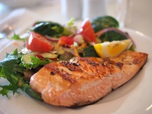
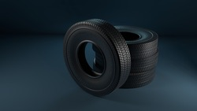
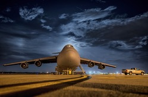

La caja negra de un avión es el dispositivo que recolecta los datos que, en caso de cualquier accidente, sirven para averiguar las causas y de esta manera orientar la investigación. Por este motivo, es uno de los aparatos por el que más se interesan las autoridades después de un accidente aéreo. A diferencia de su nombre, estas cajas no son negras. Están pintadas de colores llamativos como rojo, amarillo y naranja para que sean fácilmente localizables.
Esto se realiza con el fin de prevenir cualquier posibilidad de intoxicación y asegurar que siempre habrá un piloto en buenas condiciones de salud para llevar el avión a destino. Esta práctica no es un mandato reglamentario y cada aerolínea tiene sus normativas al respecto.
El 1 diciembre de 2021 tuvo lugar el primer vuelo comercial, con 115 pasajeros a bordo, que utilizó combustible de aviación sostenible. Este producto se fabrica a partir de 60 materias primas diferentes, entre ellas aceites vegetales, algas, grasas, flujos de residuos, alcoholes, azúcares, CO2 capturado y otras fuentes y procesos alternativos. Actualmente, todos los motores de GE Aviation están preparados para volar utilizando combustible convencional y SAF.
Las gomas de los aviones no tienen cámara de aire, sino que se llenan con nitrógeno para evitar que exploten tanto por el calor como por los impactos contra la pista cuando aterrizan. Además, por cuestiones de seguridad, al no tener oxígeno se evita la posibilidad de un incendio dentro de la goma.
La vida útil de los aviones no se determina por los años, sino por el número de presurizaciones a las que se somete. Cada vez que un avión se presuriza durante el vuelo, provoca una tensión en su fuselaje. Con el tiempo, esta tensión provoca una fatiga metálica irreparable y grietas. Una regla aproximada es de 75.000 presurizaciones por avión. En términos humanos, esto equivale a unos 20 - 25 años para la mayoría de los aviones.
